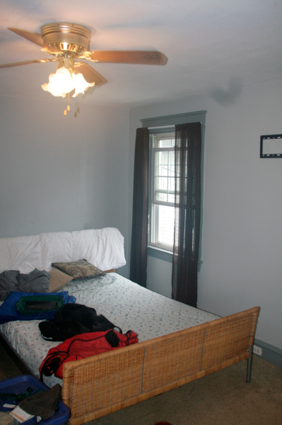
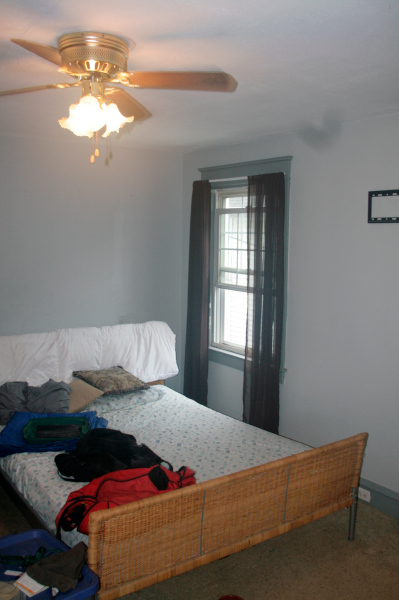

Outside photos (13 images)

Garage photos
1st floor living room photos (12 images)
Exposed floorboards that need sanding (paint & water stains) and staining.
1st floor kitchen photos (6 images)
The hanging lights in the dining room are hideous, some of the new floor boards need replacing.
1st floor half bathroom photos
1st floor back room photos
The backroom needs flooring, a rug, or another coat of paint.
2nd floor full bathroom 1 photos (8 images)
The nicest room - Black Walnut countertop and mirror.
2nd floor full bathroom 2 photos (6 images)
This bathroom is also new but there is some work needed on the toilet.
2nd floor bedroom 1 photos (4 images)
A small area needs painting and a small patch in the closet is needed which was made for access to the shower pipes.
2nd floor bedroom 2 photos (6 images)
2nd floor bedroom 3 photos (5 images)
2nd floor bedroom 4 photos (6 images)
 

3rd floor photos (25 images)
The bathroom was once functional but someone ripped out the toilet and sink and tore up the tiles and floor. There is a lot of closet space up here.


Basement photos
This is the worst room/floor. The electrical system is close to 100 years old but most houses on this block have similar systems as shown by the fact that all the other houses have ACs in the windows. The basement is ripped up and dirty and best for storage. There is a backdoor from the basement to the yard but we do not have a key for it.